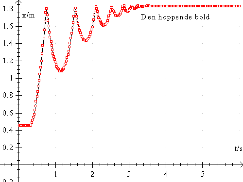

Formålet med forsøget er at undersøge bevægelse af en hoppende bold, bestemme tyngdeaccelerationen og beregne det mekaniske energitab ved boldens stød med gulvet.
LabPro, motion detector, Datalyse og bolde.
Bolden er kun påvirket af tyngdekraften Ft = m·g, hvor m er massen og g er tyngdeaccelerationen. Bolden falder derfor med konstant acceleration.
Med en afstandsmåler kan man måle afstanden til et legeme. Sonden måler afstanden ved at udsende et lydsignal og måle tiden fra signalet er afsendt til signalet er reflekteret til sonden. Ved at udsende signaler fx hvert 0,04 sekund, kan man få løbende værdier af afstanden fra sonde til legeme. Sonden måler afstanden til nærmeste legeme inden for en rumvinkel på 20° og inden for afstande fra ca. 0,40 m til ca. 6 meter.

Sonden anbringes på ca. 2 meter over gulvet og bolden holdes ca. 40 cm under sonden. LabPro styres fra Datalyse. I Datalyse vælger man LabPro som apparat og vælger i menuen for apparatet »Måling (t, f(t))«. Her indstilles antal målinger fx til 200 og tid pr måling til 0,04 sekund og som sonde vælges afstandsmåler. Sonden klikker, når den måler. I praksis kan målingen derfor foretages ved at en person sidder ved pc'en og styrer Datalyse og en anden person holder bolden. Når sonden begynder at klikke, slippes bolden. Bolden bør blive liggende på gulvet under sonden.
Når sonden holder op med at klikke, kan målingerne analyseres. Slet meningsløse målinger. Grafen vil se ud som vist til højre.
Foretag forsøg med forskellige bolde.
I forsøget måles afstanden fra sonden til bolden og ikke boldens højde over jorden. Boldens højde h udregnes som en søjleoperation i tabellen i Datalyse. Afstanden fra sonden til bolden kan bestemmes ved en måling, hvor bolden anbringes på gulvet. Afbild nu boldens højde over jorden som funktion af tiden. Diskuter den fysiske situation og forklar grafens udsendende. Vælg dernæst differentiation i Datalyse og bestem tyngdeaccelerationen vha. lineær regression for hvert hop.
Hver gang bolden rammer jorden, mister den en del af sin kinetiske energi. Beregn denne brøkdel for hvert hop, benyt funktionen maksimum i Datalyse til at udregne højderne.